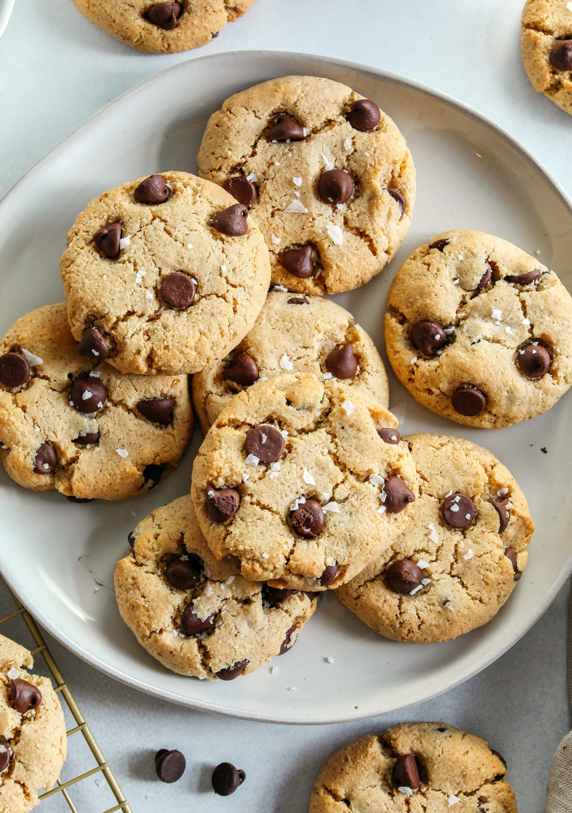

Uncle's Clay Classic Chocolate Chip Cookies

Description
Oooo-weeee nothing is more comforting that a warm plate of gooey and delicious chocolate cookies. This recipe is an classic made with my personal favorite Ghirardelli milk chocolate chips. Any occasion is a good one to bring these cookies too. Try it out and belief it yourselves.
Ingredients
- 2.25 cups unsifted flour
- 1 tsp baking soda
- .5 tsp salt
- 1 cup softened butter
- .75 cup brown sugar
- .75 cup sugar
- 2 tsp vanilla extract
- 2 eggs
- 2 cups Ghirardelli Milk Chocolate Chips (no equivalent)
- 1 cup chopped pecans (optional)
- Preheat oven to 375°F
- In a mixing bowl, stir in the flour with the baking soda and salt. Set aside
- Beat the butter, sugar, and brown sugar at a meduim speed until creamy and lightened in color (about 4 minutes).
- Add the vanilla extract and eggs, one at a time, mixing on low speed until incorporated.
- Blend the dry mixture into the wet mixture gradually and add the chocolate chips and nuts. Fold the butter with a spatula until chocolate chips and nuts are evenly distrubuted.
- Place teaspoon scoops of the mixture evenly spaced on a greased baking sheet. Bake for 9-11 minutes until golden brown.
- Remove cookies to a wire rack and cool for 5-8 minutes before serving.